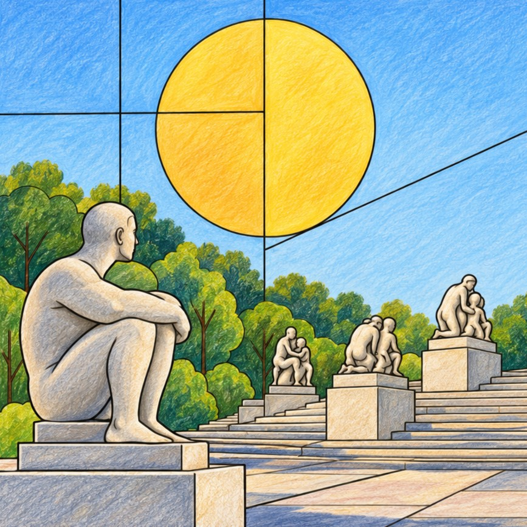
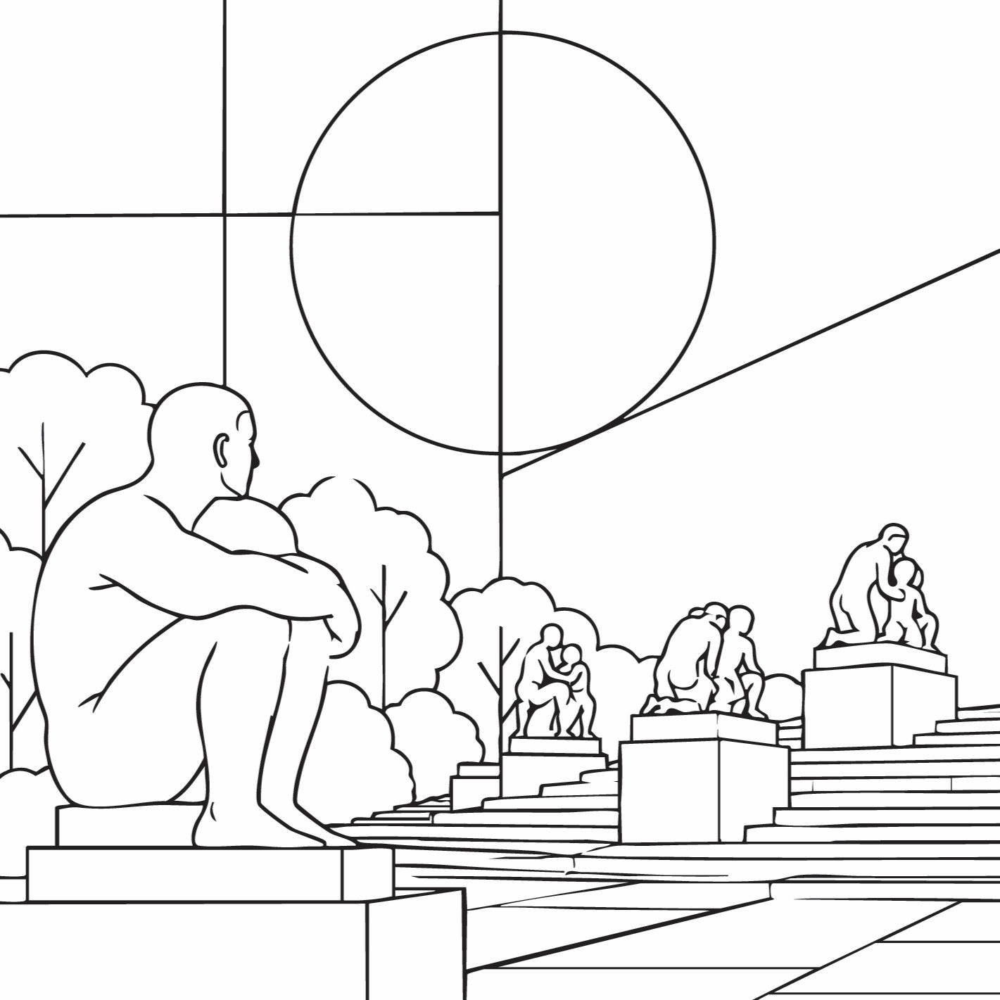

Oslo Opera House
Opened in 2008, the Oslo Opera House is famous for its striking Snøhetta-designed architecture and sloping white roof that visitors can walk across.
Discover the architecture, neighbourhoods and everyday icons of Oslo through clean Bauhaus-inspired line illustrations, ready for your colours.
From Oslo Opera House to Oslofjord & Islands, this edition explores the sights, local culture and visual character of Oslo through a gallery of line illustrations.
Designed for adults who love travel, architecture and creative downtime, the pages use bold composition and open spaces for mindful colouring.
VIEW THE OSLO BOOK

PREVIEW: OSLO · LINE ART & COLOUR
Discover the places and details that inspired the illustrations in this edition.
Opened in 2008, the Oslo Opera House is famous for its striking Snøhetta-designed architecture and sloping white roof that visitors can walk across.
Opened in 2005 in Oslo’s former West Railway Station, the Nobel Peace Center explores the Nobel Peace Prize, its laureates and their work for peace.
Founded around 1290, Akershus Fortress has served as a royal residence, military stronghold and national symbol at the heart of Oslo for more than 700 years.
Oslo’s Botanical Garden at Tøyen is a peaceful green oasis filled with thousands of plant species, historic trees, colourful flower beds and glasshouses.
Opened at Tjuvholmen in 2012, the Astrup Fearnley Museum is known for contemporary art and its distinctive Renzo Piano-designed glass-roofed architecture beside the fjord.
Created from Gustav Vigeland’s life’s work, Vigeland Sculpture Park features more than 200 sculptures in bronze, granite and wrought iron.
Damstredet is a charming 160-metre cobbled street famous for its colourful, well-preserved wooden houses dating mainly from the first half of the 19th century.
Opened in 1950, Oslo City Hall is the seat of the city’s government and one of the capital’s most distinctive monumental buildings.
Consecrated in 1697, Oslo Cathedral is the city’s main church and an important historic landmark in the centre of the Norwegian capital.
Kanelboller and skolebrød are beloved Norwegian bakery treats, combining comforting sweet dough with flavours such as cinnamon, custard and coconut.
Completed in 1849, the Royal Palace is the Norwegian monarch’s principal residence in Oslo and an elegant landmark at the end of Karl Johans gate.
Opened in Bjørvika in 2021, MUNCH is a striking modern museum housing the world’s largest collection of works by Norwegian artist Edvard Munch.
Home to ski competitions since 1892, Holmenkollen is one of Norway’s great sporting landmarks and an enduring symbol of the country’s skiing traditions.
Rising along Oslo’s waterfront, Barcode and Bjørvika are known for bold contemporary architecture that has transformed the city’s former harbour area into a modern urban district.
Electric trams have travelled through Oslo since 1894, when the city became the first in the Nordic countries to introduce an electric tramway.
Opened in 1936, the Fram Museum is home to the famous polar ship Fram and celebrates Norway’s remarkable history of polar exploration.
The islands of the inner Oslofjord are loved for their beaches, walking trails, coastal scenery and historic sites, offering a peaceful escape just beyond the city centre.
Explore the Oslo edition and the wider Page Craft Studio city colouring book collection.